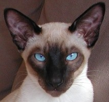

Algunas Razas de Gato
Gato Siames

Gato siamés El thai, o gato siamés tradicional, de cabeza redonda, tiene su origen en Tailandia. En 1871 fue exhibido por primera vez en el Crystal Palace en Londres. Durante el siglo XX, criadores norteamericanos crearon una nueva raza, de cabeza con forma alargada y triangular, llamada siamés moderno.
Gato Azul Ruso

Se dice que el gato Azul Ruso es una raza natural que apareció en los alrededores del puerto de Arkhangelsk en el norte de Rusia (por eso también fueron conocidos como gato arcángel). Los primeros ejemplares se mostraron como los gatos de Arcángel en la exposición de gatos en 1875 en el Crystal Palace en Londres.
Gato de los Bosques Noruego

Su origen exacto se desconoce, aunque ya aparecen en una clasicación de 1599 del sacerdote danés Peter Friis. La FIFe reconoció la raza en 1976, utilizando como modelo al gato Pans Truls. En 1992 apareció por primera vez un gato de esta especie de color ámbar, producto de una mutación. Basado en datos de Wikipedia Última modificación: 7 de noviembre de 2015